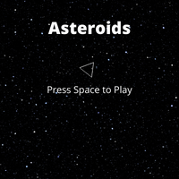
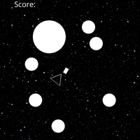

Game Title: Asteriods PIXIJS Style(I guess... it's a work in progress)
Created by: Rahmel Church Jr. Major: Game Design/Development Year: 2nd Year
Skill Set: Javascript, C#
My game will be basically a remake of the classic game asteroids. It will be colored and will make use of shape creation with PIXIJS. No need for sprites.
Genre: Action Survival Shooter
Platform: Web and Mobile
Story: The game is abstract.
Aesthetics: The game takes place in space so there will be stars all around.
Gameplay: The player will be able to do all the controls of the classic Asteriods. They can move the ship around and spin their ship 360 degrees while shooting Asteriods that break apart when shot until they're fully destroyed.
 